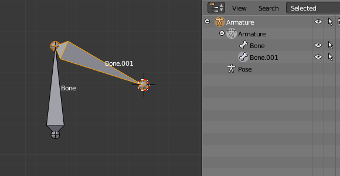
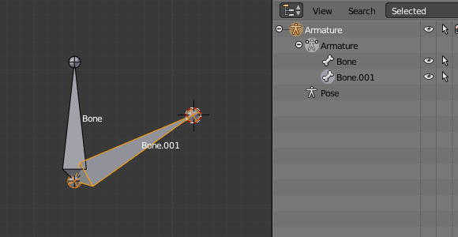
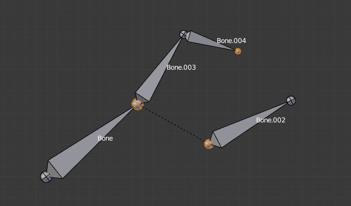
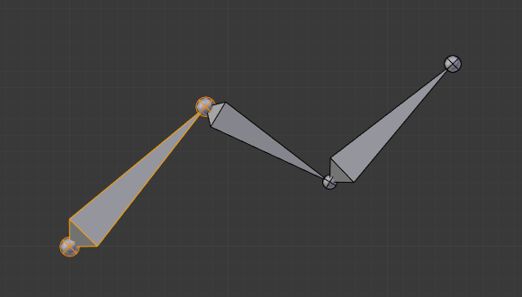

Editing Bones 编辑骨骼¶
Extrude 挤出¶
Reference 参考
E, Shift-E当你按下 E 键，对于选定的每一个尾端（显式或隐式），一个新的骨骼将被创建。这个骨骼将是前面骨骼尾端的子骨骼，并连接到它。像往常一样，一旦挤压完成，仅仅只有新的骨骼尾端被选中，在grab（移动）模式，你可以将它放置在你喜欢的位置。参见图挤出实例（ Extrusion example. 挤出实例。）。

选择了三个尾端的骨架。 |

三个挤出的骨骼。 |
你也可以使用旋转/缩放挤出，如网格那样，分别的按 E-R 和 E-S -- 以及沿一个全局或局部轴锁定（ locked ）的挤压。

单个选定的骨骼的尾端。 |

两个镜像挤出的骨骼。 |
骨骼可以通过按 Shift-E 键调出一个“镜像挤出（mirror extruding）“工具，默认是和标准骨骼挤出一样。但如果你激活了X-Axis mirror选项（T工具架上）（见 see X-Axis Mirror)，每一个挤压的尾端会产生2个有一样名字新的骨骼，除了 "_L"/ "_R" 后缀的不同（见下页 next page ），"_L" 骨骼和单一的默认挤出的骨骼行为那样-你可以使用完全一样的方法移动/旋转/缩放它。"_R "骨骼是它的一个镜像副本（沿着骨架的局部X轴），见图 Mirror extrusion example. 镜像挤出示例。。
Important
取消挤压命令将使新创建的骨骼重新回到源位置，（创建零长度的骨头，就是骨骼还在）。当退出编辑模式时这些骨骼才将被移除，然而这会引起混乱和不会像你想要的那样保持它们。如果你认识到这个问题立刻使用undo命令撤消挤压动作。
你应该知道，你不能像在网格编辑那样只是按X键来解决这个问题，因为挤出是选择了新创建的骨骼尾端，并如下文所述删除命令忽略骨头的关节。要删除这些挤压骨头不用undo，你必须移动的骨骼尾端，然后选择骨骼并删除 （Delete Selected Bone(s)） 他们。
Mouse Clicks 鼠标点击¶
Reference 参考
Ctrl-LMB如果你选择了至少一根骨骼，按下 Ctrl-LMB -点击添加一根新骨骼。
关于新的骨骼尾端：
After you Ctrl-LMB -clicked it becomes the active element in the armature,
it appears to be right where you clicked, but (as in mesh editing)
it will be on the plane parallel to the view and passing through the 3D cursor.
新骨骼的首端和父骨骼的位置取决于激活的元素：
{kind=link}
激活元素是骨骼时按住Ctrl-点击。
If the active element is a bone:
- The new bone's root is placed on the active bone's tip.
- The new bone is parented and connected to the active bone (check the Outliner in Fig. 激活的元素是尾端时按住Ctrl-点击。).

激活的元素是尾端时按住Ctrl-点击。
If the active element is a tip:
- The new bone's root is placed on the active tip.
- The new bone is parented and connected to the bone owning the active tip (check the Outliner in Fig. 激活的元素是尾端时按住Ctrl-点击。).

当激活的元素是分离的首端时按住Ctrl-点击。
If the active element is a disconnected root:
- The new bone's root is placed on the active root.
- The new bone is not parented to the bone owning the active root (check the Outliner in Fig. 当激活的元素是分离的首端时按住Ctrl-点击。).
因此，新骨骼将 不会 连接到任何骨骼上。

当激活的元素是链接的首端时按住Ctrl-点击。
If the active element is a connected root:
- The new bone's root is placed on the active root.
- The new bone is parented and connected to the parent of the bone owning the active root (check the Outliner in Fig. 当激活的元素是链接的首端时按住Ctrl-点击。).
这是很明显的。因为如果激活的元素是连接到首端，然后激活元素也是父骨骼的尾端，所以这和第二种情况是一样的。
新骨骼的尾端变成了激活元素，如果你重复按住 Ctrl-RMB 几次，将连续添加几个骨骼到同样的链的尾端。
Fill between Joints 在关节之间填充¶
Reference 参考
F这个工具的主要用途是在选定的关节之间通过按住 F 键创建一个骨骼，类似于在网格编辑中你可以创建“边/面”。
如果你有一个首端和一个尾端被选择，新的骨骼：
- 将有一个首端位于选择的尾端上。
- 将有一个尾端位于选择的首端上。
- 父对象是链接到选择骨骼自身的尖端。

激活左边的尾端。 |

激活右边的尾端。 |
如果你有两个尾端被选择，新的骨骼：
- 将有首端位于靠近3D游标的选择的尾端。
- 尾端位于其它选择的尾端。
- 父对象是连接到骨骼本身的尾端，作为新骨骼的首端。

3D游标在左边。 |

3D游标在右边。 |
如果你有两个根部被选择，由于Blender不是实时的更新界面的你将面临一个小问题。
当按下 F 键，与以前的情况类似，你会看到一个新骨骼：
- 新骨骼首端位于靠近3D光标选择的首端。
- 尾端位于其它一个选择骨骼的首端。
- 父对象是连接到骨骼本身的尾端，作为新骨骼的首端。
如果你试图移动新骨骼，Blender将更新界面，你将看到新的骨骼首端移动到父骨骼的尾端。

UI更新前（3D 游标在左边）。 |

UI更新后，正确的视图。 |
用仅仅选择一个骨骼的关节点击 F ，将创建一根从选择的关节到3D游标位置的一根骨骼，它没有任何的父骨骼。

选定一个尾端填充。 |

选定一个首端填充。 |
{kind=link}
{kind=link}
你将得到一个错误当：
- 试图填充同一个骨骼的两个关节。
- 试图填充两个以上的骨骼关节。
Duplicate 复制¶
Reference 参考
Shift-DNote
这个工具仅仅工作在选定的骨骼；选择关节时无效。
As in mesh editing, by pressing Shift-D the selected bones will be duplicated.
The duplicates become the selected elements and they are placed in grab mode,
so you can move them wherever you like.
如果你选择的是骨骼链的一部分，通过复制得到的是选择链部分的副本，所以副本是和原始骨骼是完全一样的。
一个骨骼的副本是和原始骨骼的父对象是一样的，即使不选择复制骨骼首端。但是，如果一个骨骼是父对象 和 连接到一个没有选择的骨骼，它的副本将是父对象但 没有 连接到没有选择的骨骼（见图 复制示例。)。

一个选择了三个骨骼和一个单一的骨骼首端的骨架。 |

三个骨骼的副本。请注意，选择的链条被保存在副本中，并且Bone.006为父，但没有连接到Bone.001，如由黑色虚线。同样，Bone.007为父，但没有连接到Bone.003。 |
Delete Selected Bone(s) 删除所选骨骼。( )¶
Reference 参考
X此工具删除选定的骨骼，所选的 关节 被忽略。
如果你在一条骨骼链删除了一个骨骼，它的子骨骼对象将自动连接到它自己的父骨骼对象作为父对象，但 没有 连接，以避免整个骨架变形。

删除前面一个骨架选择的两个骨骼。 |

两个骨骼被删除。注意Bone.002,以前链接的Bone.001已经被删除，它现在的父对象是Bone骨骼。 |
{kind=link}
Merge Bones 合并骨骼¶
Reference 参考
Alt-M只要它们形成链，就可以合并几个选定的骨骼。由所选骨骼形成的每个子链将产生一个骨骼，其首端将是首端骨骼的首端，并且其尾端将是尾端骨骼的尾端。
点击确认 .
如果另一个（未选择的）链起源于合并的骨骼链内部，它将是合并骨骼的父级。如果他们被连接，它将连接到新的骨骼。
这有一个很微妙的地方（见图 合并示例。 ):即使已经连接（在未合并链的首端骨骼没有根球），骨骼没有视觉上的连接-这就好像你编辑一个骨骼一样，不同的是取决于你编辑那一根链的骨骼（比较下面的两个图像的例子来理解这个更好）。

在合并前，一个选择了一个链和一个单一的骨骼的骨架。 |
|

Bone.004被旋转，因此Bone.006的尾端被移动到Bone.003的首端。 |

Bone.006的尾端产生了转换，因此Bone.003的首端被移动到Bone.006的尾端。" |
{kind=link}
Subdivide 细分¶
Reference 参考
你可以在一个骨骼通过细分得到两个或更多的骨骼。这个工具将会细分所有选定的骨骼，并保留现有的关系：从一个细分中创建的骨头，总是形成一个连接链的骨头。
在Subdivide Multi Operator面板中从每个选定的骨骼创建任意数量的骨骼。
- Number of Cuts 切割数量
- 指定切割次数。 在网格编辑中， 如果你设置 n 切割, 对于每个选定的骨骼你将得到 n + 1骨骼。

骨架上一个细分前的骨骼。 |

选择的骨骼切割2次的骨骼，得到三个子骨骼。 |
{kind=link}
Locking Bones锁定骨骼¶
在编辑模式你可以有几种方法避免骨骼产生变换：
- 激活Transform Properties面板（N）的 Bones（骨骼） 标签的Lock选项，可以锁定所有骨骼;
- 按
Shift-W - 选择 ).
如果一个锁定骨骼的首端接到一个没有锁定骨骼的尾端，则不会被锁定，换言之，你可以随意移动它们。这意味着相链的骨骼链，当你锁定其中一个骨骼时，你其实只是仅仅锁定了它的尾端。对于没有相连的骨骼，锁定是对骨骼两端关节都是有效的。
X-Axis Mirror X 轴镜像¶
Reference 参考
此选项可启用沿X轴的编辑操作的自动镜像。当在 Edit模式 时选择骨架，另一个非常有用的工具是 X-Axis MirrorX 轴镜像 编辑选项 , 当你有一对名字一样只是"侧边后缀"不同的骨骼（如".R"/".L, or "_right右/"_left左"…)，一旦开启这个选项，每当你变换一个骨骼时（移动/旋转/缩放, …), ，它的“另一面”也会通过骨架的局部沿X轴对称相应改变。这个绑定常常用在至少有一个对称的物体（动物，人等），这个方法可以很容易就节省了你一半的时间！
See also
Separate Bones 分离骨骼¶
你可以像网格那样，分离骨骼为一个新的骨骼物体通过 , Ctrl-Alt-P 当然， 对象模式，你可以将所有选择的骨架合并为一个骨架物体通过 :Object --> Join Objects, Ctrl-J。